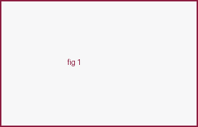
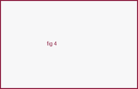
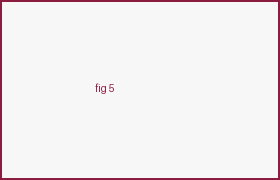

About
I am a Ph.D. student in Electrical and Computer Engineering at Virginia Tech, advised by Prof. Ruoxi Jia in the Responsible Data Science Lab. I previously completed my M.S. at Virginia Tech and my B.Tech. at the Indian Institute of Information Technology, Una.
My research focuses on AI Safety & Alignment — red-teaming and jailbreak robustness, AI agent safety, and reasoning under data-efficient training regimes. I am broadly interested in understanding and mitigating failure modes in large language models and agentic systems.
Feel free to reach out at mahavirdabas18@vt.edu.
News
- Jan 2026 Our paper Adversarial Déjà Vu was accepted to ICLR 2026!
- 2025 Selected as a participant in the Amazon Nova AI Challenge (top 10 teams globally).
- May 2025 Started my Ph.D. at Virginia Tech.
- May 2025 Just Enough Shifts (ACTOR) accepted to ICML 2025.
Publications
* denotes equal contribution.

Adversarial Déjà Vu: Jailbreak Dictionary Learning for Stronger Generalization to Unseen Attacks
ICLR 2026
Just Enough Shifts: Mitigating Over-Refusal in Aligned Language Models with Targeted Representation Fine-Tuning
ICML 2025


Academic Service
Reviewer: ICML 2025 · NeurIPS 2025 · EMNLP 2025 · ICLR 2026 · ICML 2026
Awards & Honors
- Amazon Nova AI Challenge 2025 — top 10 teams globally.
- Graduate Student Fellowship, Bradley Dept. of ECE, Virginia Tech.
- Institute Silver Medalist, IIIT Una.